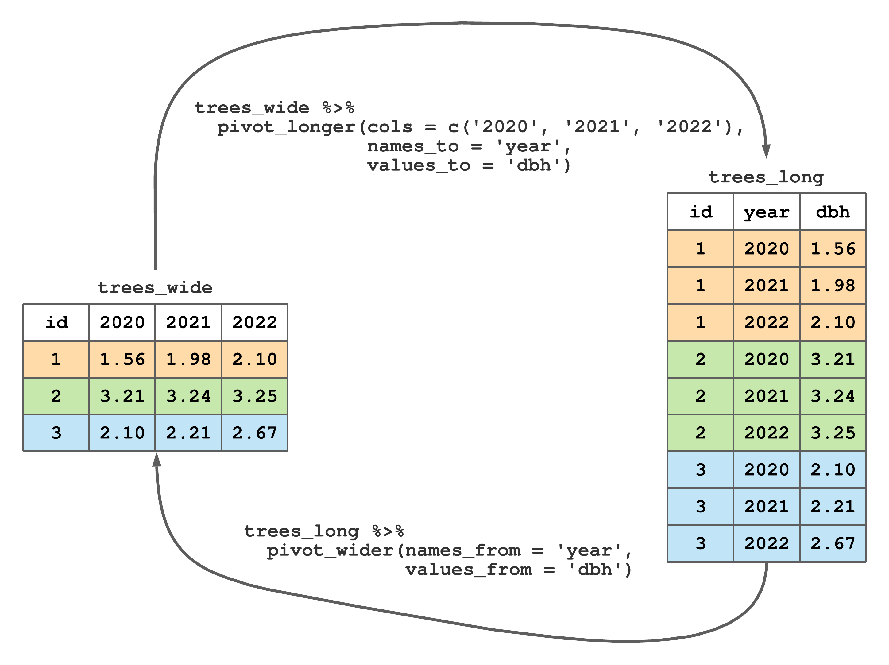

Chapter 8 Tidying data with tidyr
Formats used to organize data are typically chosen to simplify recording, storage, analysis, or presentation. As we’ll see, a format ideal for one purpose might not be ideal for other purposes. For example, a format useful for recording values in the field might not lend itself well to subsequent analysis or succinct data summaries.
The package tidyr provides functions to simplify moving between dataset formats and other common data wrangling and analysis tasks. Let’s align our definitions for dataset components with those used in tidyr. In tidyr, a dataset is a collection of values, i.e., numbers, character strings and other data types we covered. Every value is indexed by a variable and an observation. A variable contains all values that measure the same underlying characteristic (e.g., DBH, height, volume, or species) across observations. An observation (e.g., tree or plot) contains all values measured across variables.
Following Wickham, Çetinkaya-Rundel, and Grolemund (2023), tidy data is a way to map a dataset’s meaning to its structure. A dataset is messy or tidy depending on how rows and columns are matched with observations, variables, and values. Tidy data meet the following conditions.
- Every column is a variable.
- Every row is an observation.
- Every row/column element is a single value.
Data are messy if they do not meet one or more of the tidy data conditions. Tidy data simplify many data summary and analysis tasks because they provide a standard way for structuring a dataset.
Consider the left dataset in Figure 8.1 called dbh_wide. Rows of dbh_wide correspond to three trees, columns are measurement years, and values are DBH measurements. As the dataset name suggests, these data are in wide format. This dataset is also messy because more than one column holds DBH measurements and column names themselves are values for a year variable. As we’ll explore further in Section 8.1, tidyr's pivot_longer() function changes wide format to long format—a process illustrated by moving from trees_wide to trees_long in Figure 8.1. The trees_long dataset is tidy, as each column holds only one variable (i.e., id, year, and dbh) and each row corresponds to a single id, year, and dbh observation.

FIGURE 8.1: Changing longitudinal DBH measurements on three trees from wide to long format.
Most datasets we encounter are messy. Importantly, messy data are not bad or wrong, in fact a messy table is often a very effective way to summarize data as we’ll see in Section 8.3. However, from a data analysis standpoint, tidy data often simplify analysis and conversion to other formats. Receiving data in a messy format typically means you’ll spend some time wrangling it into either a tidy format or another messy format to meet your needs. Subsequent sections cover some tidyr functions used to clean up messy data. Specifically, we’ll cover how to remedy the following messy data features.
- Column headers are values, not variable names.
- Multiple variables are stored in one column.
- Variables are stored in both rows and columns.
The subsequent sections illustrate several tidyr functions using the messy FACE dataset introduced in Section 1.2.3. As a refresher, the Aspen FACE Experiment was designed to assess the effects of increasing tropospheric ozone and carbon dioxide concentrations on the structure and functioning of northern forest ecosystems. The code below loads packages we’ll use in our tidying efforts and reads the FACE data into the face tibble.
library(readr)
library(dplyr)
library(tidyr)
face <- read_csv("datasets/FACE/FACE_aspen_core_growth.csv")Run face %>% glimpse() to see column names and types. Also notice non-syntactic column names in the “FACE_aspen_core_growth.csv” file are placed within backticks in the face tibble.57
In the next few sections, the messy FACE dataset is used to introduce some tidyr functions. We focus on a subset of the FACE dataset that includes each tree’s identifiers and height measurements for 2001 through 2005. The code below uses dplyr functions to select the desired columns, rename the `ID #` column name to ID.58 In addition to unique tree ID and height measurements, we retain the experiment design variables replication (Rep), treatment (Treat), and tree clone identifier (Clone). Notice the use of the contains() helper function within select().
face <- face %>%
select(Rep, Treat, Clone, ID = `ID #`,
contains(as.character(2001:2005)) & contains("Height"))
face#> # A tibble: 1,991 × 9
#> Rep Treat Clone ID `2001_Height` `2002_Height`
#> <dbl> <dbl> <dbl> <dbl> <dbl> <dbl>
#> 1 1 1 8 45 NA NA
#> 2 1 1 216 44 547 622
#> 3 1 1 8 43 273 275
#> 4 1 1 216 42 526 619
#> 5 1 1 216 54 328 341
#> 6 1 1 271 55 543 590
#> 7 1 1 271 56 450 502
#> 8 1 1 8 57 217 227
#> 9 1 1 259 58 158 155
#> 10 1 1 271 59 230 241
#> # ℹ 1,981 more rows
#> # ℹ 3 more variables: `2003_Height` <dbl>,
#> # `2004_Height` <dbl>, `2005_Height` <dbl>8.1 Wide and long formats
Recall the FACE dataset is longitudinal, meaning measurements were taken repeatedly across time (in this case years). Notice in the face tibble, height measurements are stored in successive columns, i.e., `2001_Height`\(\ldots\)`2005_Height`. Like trees_wide in Figure 8.1, face is stored in wide format.
To tidy these messy data, our first task is to change face to a long format. We could imagine doing this in a spreadsheet software by copying and pasting, but this would be extremely tedious and would almost surely lead to errors. The tidyr package has two functions pivot_longer() and pivot_wider() to move between wide and long formats.
The call to pivot_longer() below moves face from wide to long format. In the pivot_longer() function, we specify the implicit data = face59, columns to pivot into longer format (cols = contains("Height")), name to give the column created from the wide column names (names_to = "Year_Type"), and name we want to give to the column containing the measurements values_to = 'Height_cm'.
face_long <- face %>%
pivot_longer(cols = contains("Height"),
names_to = "Year_Type",
values_to = "Height_cm")
face_long#> # A tibble: 9,955 × 6
#> Rep Treat Clone ID Year_Type Height_cm
#> <dbl> <dbl> <dbl> <dbl> <chr> <dbl>
#> 1 1 1 8 45 2001_Height NA
#> 2 1 1 8 45 2002_Height NA
#> 3 1 1 8 45 2003_Height NA
#> 4 1 1 8 45 2004_Height NA
#> 5 1 1 8 45 2005_Height NA
#> 6 1 1 216 44 2001_Height 547
#> 7 1 1 216 44 2002_Height 622
#> 8 1 1 216 44 2003_Height 715
#> 9 1 1 216 44 2004_Height 716
#> 10 1 1 216 44 2005_Height 817
#> # ℹ 9,945 more rowsLet’s compare the dimensions of the wide format face with face_long.
#> [1] 1991 9#> [1] 9955 6There are more columns in the wide format face and more rows in the long format face_long, hence the reason these formats are referred to as wide and long.
pivot_wider() is used to widen a dataset in long format. For example, the code below moves face_long back to its original wide format.
face_wide <- face_long %>%
pivot_wider(names_from = "Year_Type", values_from = "Height_cm")
# Check if face_wide and face are the same.
all.equal(face_wide, face)#> [1] TRUEIn pivot_wider() above, we specify the implicit data = face_long, column from which to get wide column names (names_from = "Year_Type"), and column from which to get values (values_from = "Height_cm"). As expected, and shown using all.equal(face_wide, face), the call to pivot_wider() returns a tibble that’s the same as face.
8.2 Separating and uniting columns
Let’s take another look at the Year_Type column in the face_long dataset.
#> # A tibble: 9,955 × 1
#> Year_Type
#> <chr>
#> 1 2001_Height
#> 2 2002_Height
#> 3 2003_Height
#> 4 2004_Height
#> 5 2005_Height
#> 6 2001_Height
#> 7 2002_Height
#> 8 2003_Height
#> 9 2004_Height
#> 10 2005_Height
#> # ℹ 9,945 more rowsThe Year_Type column contains two variables separated by an underscore—the measurement year and measurement type. To set face on the tidy data path, we need to separate Year_Type into its components. Below, we use the tidyr separate_wider_delim() function to separate the Year_Type column into Year and Type. We want to retain the Year component, whereas the Type component is simply the value 'Height" replicated for each row and can be discarded.
face_long <- face_long %>%
separate_wider_delim(cols = "Year_Type",
delim = "_",
names = c("Year", NA))
face_long#> # A tibble: 9,955 × 6
#> Rep Treat Clone ID Year Height_cm
#> <dbl> <dbl> <dbl> <dbl> <chr> <dbl>
#> 1 1 1 8 45 2001 NA
#> 2 1 1 8 45 2002 NA
#> 3 1 1 8 45 2003 NA
#> 4 1 1 8 45 2004 NA
#> 5 1 1 8 45 2005 NA
#> 6 1 1 216 44 2001 547
#> 7 1 1 216 44 2002 622
#> 8 1 1 216 44 2003 715
#> 9 1 1 216 44 2004 716
#> 10 1 1 216 44 2005 817
#> # ℹ 9,945 more rowsThe call to separate_wider_delim() above specifies the implicit data = face_long, column to separate (cols = "Year_Type"), delimiter that separates the columns (delim = "_"), and names for the resulting columns (names = c("Year", NA)). The NA in the vector passed to the names argument means remove the column that corresponds to the Type component of the Year_Type column. At this point face_long is now tidy data!
Consult the manual page via ?tidyr::separate_wider_delim to learn more about this and related functions for separating delimited columns.
There are occasions when you might want to combine multiple columns into one. We can do this using unite(). For example, the code below unites the Rep, Treat, and Clone columns into a single column called Design, with each of the values separated by an underscore. See ?tidyr::unite for more details.
#> # A tibble: 9,955 × 4
#> Design ID Year Height_cm
#> <chr> <dbl> <chr> <dbl>
#> 1 1_1_8 45 2001 NA
#> 2 1_1_8 45 2002 NA
#> 3 1_1_8 45 2003 NA
#> 4 1_1_8 45 2004 NA
#> 5 1_1_8 45 2005 NA
#> 6 1_1_216 44 2001 547
#> 7 1_1_216 44 2002 622
#> 8 1_1_216 44 2003 715
#> 9 1_1_216 44 2004 716
#> 10 1_1_216 44 2005 817
#> # ℹ 9,945 more rows8.3 Application: Stand and stock tables
Data collected for forest research, inventory, and monitoring efforts are typically summarized using a variety of tables. For example, stand and stock tables are key data summary products that support a variety of forest management decisions, e.g., silvicultural prescription, economic valuation, and structural diversity assessment. Recalling terminology introduced in Section 4.1, the stand table summarizes a quantitative discrete variable (e.g., stem count) grouped by one or more categorical (i.e., qualitative) variable (e.g., size class or species). Similarly, the stock table summarizes a quantitative continuous variable (e.g., volume, weight, or basal area) grouped by one or more categorical variable.
In forestry applications, stand tables often summarize the average number of trees per unit area (e.g., acre or hectare) within an area of interest (e.g., stand, management unit, or forest) by DBH class and species. Similarly, stock tables often summarize the average wood volume or weight per unit area within an area of interest by DBH class and species. DBH classes are DBH intervals with widths chosen to communicate situation specific information.
| Species | DBH (in) | Trees/ac | Volume (ft\(^3\)/ac) |
|---|---|---|---|
| Abies balsamea | 11.3 | 8 | 142.8 |
| Betula papyrifera | 14.8 | 8 | 269.6 |
| Betula papyrifera | 15.4 | 8 | 293.7 |
| Pinus strobus | 9.8 | 8 | 116.3 |
| Pinus strobus | 10.7 | 8 | 143.6 |
| Pinus strobus | 13.1 | 8 | 231.9 |
We motivate building stand and stock tables using forest stand estimates provided in Table 8.1. In this table, each row provides an estimated number of trees and volume on a per acre basis for a given species and DBH. For example, the first row in Table 8.1 says a typical (or average) acre has 8 11.3 inch DBH Abies balsamea stems with a combined volume of 142.8 ft\(^3\). We’ll introduce the inventory data from which these estimates were derived later in Chapter ??. For now, however, these estimates are used to build the stand and stock tables given in Tables 8.2 and 8.3, respectively.
Before getting started, notice stand and stock tables are not tidy according to the definition given at the opening of this chapter—they are wide and messy, and that’s okay. As we’ll see below, it’s best to start with long and tidy data, then change its format to the desired wide and messy stand or stock table.
Let’s begin with the stand table shown in Table 8.2. Stand table rows correspond to the distinct species in Table 8.1, columns are four inch DBH classes, and values are the number of trees for the given row and column.
In Table 8.2, notice the parentheses and square bracket notation used to define DBH class intervals (i.e., column names). A closed interval, denoted by square brackets, means the endpoints are included in the interval. For example, \([6, 10]\) is a closed interval with 6 and 10 inch endpoints. Referencing Table 8.1, there is one Pinus strobus with a DBH that falls within the \([6, 10]\) inch DBH class interval, hence the corresponding 8 trees/ac value in Table 8.2. A closed interval can also be written using \(\le\) notation, e.g., \([6, 10]=\{6 \le x \le 10\}\) where \(x\) is DBH. An open interval, denoted by parentheses, means the endpoints are not included in the interval. Following from open and closed notation, a half-open interval includes only one of its endpoints, and is denoted by one parentheses and one square bracket. The stand table has two half-open intervals \((10, 14]\) and \((14, 18]\) (these can be written as \(\{10 < x \le 14\}\) and \(\{14 < x \le 18\}\)). Table 8.1 shows one Abies balsamea and two Pinus strobus in the \((10, 14]\) DBH class, and two Betula papyrifera in the \((14, 18]\) DBH class. Stand table values are the sum of trees for the given species and DBH class, hence there are 16 Pinus strobus in the \((10, 14]\) DBH class and 16 Betula papyrifera in the \((14, 18]\) DBH class.
| Species | [6,10] | (10,14] | (14,18] | Totals |
|---|---|---|---|---|
| Abies balsamea | 0 | 8 | 0 | 8 |
| Betula papyrifera | 0 | 0 | 16 | 16 |
| Pinus strobus | 8 | 16 | 0 | 24 |
| Totals | 8 | 24 | 16 | 48 |
The stock table is given in Table 8.3. This stock table is built the same way as the stand table, with the exception that its values are the sum of volume for each given species and DBH class. For example, the stand table’s 8 Pinus strobus trees per acre in the \([6, 8]\) inch DBH class, correspond to 116.3 ft\(^3\) of volume per acre, and the 16 Betula papyrifera trees per acre in the \((14, 18]\) inch DBH class, correspond to 563.3 ft\(^3\) of volume per acre (i.e., \(269.6+293.7\) in Table 8.1).
As we’ve seen, estimate values in Table 8.1 comprise the non-zero values in the resulting stand and stock tables. The zero values in a stand or stock table are just as important as the non-zero values because they denote the absence of a given species and DBH class combination and hence contribute to management decisions and forest valuation. These explicit zeros in the stand and stock tables are implicit zeros in Table 8.1.
Lastly, it’s useful to add row and column totals to the stand and stock table margins. For Tables 8.2 and 8.3 the row totals are number of trees and volume per acre for each species, respectively. Similarly, column totals are the number of trees and volume per acre for each DBH class.
| Species | [6,10] | (10,14] | (14,18] | Totals |
|---|---|---|---|---|
| Abies balsamea | 0.0 | 142.8 | 0.0 | 142.8 |
| Betula papyrifera | 0.0 | 0.0 | 563.3 | 563.3 |
| Pinus strobus | 116.3 | 375.5 | 0.0 | 491.8 |
| Totals | 116.3 | 518.3 | 563.3 | 1197.9 |
Drawing on the preceding sections in this and previous tidyverse chapters, we show how a piped series of functions can efficiently deliver stand, stock, and similar tables with a fraction of the pain incurred using hand calculations or traditional spreadsheets.
Here are a few considerations for building stand and stock tables from forest inventory data:
- Apply the appropriate estimator to generate the desired values for the stand or stock table. These topics will be covered in Chapters 11, 12, and 13.
- Identify the quantitative discrete and continuous variables of interest as well as the categorical variables you’ll use to define the table’s rows and columns.
- Often, we need to convert a continuous variable into a categorical variable to represent the table’s rows or columns. For example, if DBH was collected as a continuous variable (which is often the case), then it’ll need to be discretized, i.e., converted to a categorical variable, for use in a
dplyrgrouped summarize. The way in which you discretize your continuous variable depends on what information you want to communicate with the resulting table. For stand and stock tables, it’s common to see continuous DBH measurements discretized to 2 or 4 inch DBH classes (or equivalent widths in centimeters). Theggplot2packagecut_width(),cut_number(), andcut_interval()functions provide convenient ways to discretize continuous variables.
- Often, we need to convert a continuous variable into a categorical variable to represent the table’s rows or columns. For example, if DBH was collected as a continuous variable (which is often the case), then it’ll need to be discretized, i.e., converted to a categorical variable, for use in a
- Reshape your data to long format using
tidyrfunctions, if needed, so they can be easily piped into a series ofdplyrfunctions used to form the desired stand or stock table.- In practice you’ll encounter a variety of different data collection, recording, and storage protocols that yield all sorts of different data organization formats that inevitably need wrangling into a format suitable to
dplyr.
- In practice you’ll encounter a variety of different data collection, recording, and storage protocols that yield all sorts of different data organization formats that inevitably need wrangling into a format suitable to
Our focus is on the second two considerations listed above. We’ll work on the first consideration in subsequent chapters. For now, however, we begin with the table of estimates provided in Table 8.1 and develop code to reproduce Tables 8.2 and 8.3.
We begin by reading tree estimates from Table 8.1 into the ests tibble.
Next, in the code below, we use cut_width() to discretize DBH_in and add this new discretized column, called DBH_4in, back to ests via mutate().60 Also in the mutate() call, the .after argument positions the new DBH_4in column to the right of DBH_in to facilitate visual comparison. cut_width() (and related functions cut_number() and cut_interval()), provide a lot of control over how intervals are formed and how values on their endpoints are handled.
#> # A tibble: 6 × 5
#> Species DBH_in DBH_4in trees_ac vol_cu_ft_ac
#> <chr> <dbl> <fct> <dbl> <dbl>
#> 1 Abies balsamea 11.3 (10,14] 8 143.
#> 2 Betula papyrife… 14.8 (14,18] 8 270.
#> 3 Betula papyrife… 15.4 (14,18] 8 294.
#> 4 Pinus strobus 9.8 [6,10] 8 116.
#> 5 Pinus strobus 10.7 (10,14] 8 144.
#> 6 Pinus strobus 13.1 (10,14] 8 232.Take a look at the new DBH_4in column in the ests tibble above. Notice its a factor data type and its values use parentheses and square bracket notation to define interval endpoints—the same notation used for column labels in the desired stand and stock tables. Also, confirm that values in DBH_in map to the correct DBH_4in interval.
Next, recall, explicit zeros in stand and stock tables are implicit zeros in Table 8.1. Let’s add these implicit zero to ests (i.e., make the implicit explicit by adding the species and DBH class combinations with zero trees and volume). This is done using tidyr::complete(). This function adds all missing value combinations for a discrete variable set. The first argument in complete() is the data, followed by column names used to form the combinations, then the fill argument is given a list of column names and their associated desired explicit values. Our call to complete() below adds missing combinations of Species and DBH_4in and sets explicit values of trees_ac and vol_cu_ft_ac to zero. Notice, by not specifying an explicit value for DBH_in in the fill argument’s list, the NA default value is used.61
#> # A tibble: 11 × 5
#> Species DBH_4in DBH_in trees_ac vol_cu_ft_ac
#> <chr> <fct> <dbl> <dbl> <dbl>
#> 1 Abies balsamea [6,10] NA 0 0
#> 2 Abies balsamea (10,14] 11.3 8 143.
#> 3 Abies balsamea (14,18] NA 0 0
#> 4 Betula papyrif… [6,10] NA 0 0
#> 5 Betula papyrif… (10,14] NA 0 0
#> 6 Betula papyrif… (14,18] 14.8 8 270.
#> 7 Betula papyrif… (14,18] 15.4 8 294.
#> 8 Pinus strobus [6,10] 9.8 8 116.
#> 9 Pinus strobus (10,14] 10.7 8 144.
#> 10 Pinus strobus (10,14] 13.1 8 232.
#> 11 Pinus strobus (14,18] NA 0 0Next, sum values in trees_ac and vol_cu_ft_ac columns that have the same species and DBH class.62 We add the .groups = "drop" argument as species grouping in the resulting tibble is not needed.
ests <- ests %>%
group_by(Species, DBH_4in) %>%
summarize(sum_trees_ac = sum(trees_ac),
sum_vol_cu_ft_ac = sum(vol_cu_ft_ac),
.groups = "drop")
ests#> # A tibble: 9 × 4
#> Species DBH_4in sum_trees_ac sum_vol_cu_ft_ac
#> <chr> <fct> <dbl> <dbl>
#> 1 Abies balsamea [6,10] 0 0
#> 2 Abies balsamea (10,14] 8 143.
#> 3 Abies balsamea (14,18] 0 0
#> 4 Betula papyrif… [6,10] 0 0
#> 5 Betula papyrif… (10,14] 0 0
#> 6 Betula papyrif… (14,18] 16 563.
#> 7 Pinus strobus [6,10] 8 116.
#> 8 Pinus strobus (10,14] 16 376.
#> 9 Pinus strobus (14,18] 0 0Okay, now we’re in business! The only thing left to do is reshape ests using tidyr’s pivot_wider() function to put Species along the rows and DBH_4in across the columns and decide which variable to set as the resulting table’s value. This is done in the code below to make the stand table.
stand <- ests %>%
select(Species, DBH_4in, sum_trees_ac) %>%
pivot_wider(names_from = DBH_4in, values_from = sum_trees_ac)
stand#> # A tibble: 3 × 4
#> Species `[6,10]` `(10,14]` `(14,18]`
#> <chr> <dbl> <dbl> <dbl>
#> 1 Abies balsamea 0 8 0
#> 2 Betula papyrifera 0 0 16
#> 3 Pinus strobus 8 16 0Notice in the code above, we select() only those columns used in the call to pivot_wider().63
The final touch is to add row and column totals—the code for which is provided below with minimal explanation. As you’ll see, adding these totals is a bit convoluted; however, each code component has been covered previously, so see if you can work through it and understand the steps.
# Sum across rows.
stand <- stand %>%
mutate(Totals = rowSums(across(where(is.numeric))))
# Sum down columns.
# This is a little tricky. Notice the . places the output from
# summarize() after stands in the bind_rows(stands, .), i.e., it
# binds the row of totals to the bottom of the stand tibble.
stand <- stand %>%
summarize(Species = "Totals", across(where(is.numeric), sum)) %>%
bind_rows(stand, .)
stand#> # A tibble: 4 × 5
#> Species `[6,10]` `(10,14]` `(14,18]` Totals
#> <chr> <dbl> <dbl> <dbl> <dbl>
#> 1 Abies balsamea 0 8 0 8
#> 2 Betula papyrifera 0 0 16 16
#> 3 Pinus strobus 8 16 0 24
#> 4 Totals 8 24 16 48The stand tibble above is the stand Table 8.3. Creating the stock table follows the exact same steps up to the call to pivot_wider().
We took care to introduce the idea of implicit zeros in the forest inventory estimates and how complete() is used to make those implicit zeros explicit. In Chapter 12, making implicit zeros explicit via the complete() function will again be important for implementing methods that generate estimates from forest inventory data.
When building stand and stock tables, specifying the optional values_fill argument in pivot_wider() allows you to skip the prior call to complete(). Like complete() and its fill argument, pivot_wider()’s values_fill argument allows you to specify the explicit value for missing stand and stock table row and column combinations.
The code below rebuilds the stand table in a single workflow starting with a fresh copy of ests and taking advantage of pivot_wider()’s values_fill argument, which removes the need for complete() (we comment out the call to complete() and add values_fill = 0 to pivot_wider().
ests <- read_csv("datasets/stand_stock_estimates.csv")
stand <- ests %>%
mutate(DBH_4in = cut_width(DBH_in, width = 4)) %>%
# complete(Species, DBH_4in, fill = list(trees_ac = 0)) %>%
group_by(Species, DBH_4in) %>%
summarize(sum_trees_ac = sum(trees_ac), .groups = "drop") %>%
pivot_wider(names_from = DBH_4in, values_from = sum_trees_ac,
values_fill = 0) # Added values_fill argument.
# Add row and column totals.
stand <- stand %>%
mutate(Totals = rowSums(across(where(is.numeric))))
# Sum down columns.
stand <- stand %>%
summarize(Species = "Totals", across(where(is.numeric), sum)) %>%
bind_rows(stand, .)
stand#> # A tibble: 4 × 5
#> Species `(10,14]` `(14,18]` `[6,10]` Totals
#> <chr> <dbl> <dbl> <dbl> <dbl>
#> 1 Abies balsamea 8 0 0 8
#> 2 Betula papyrifera 0 16 0 16
#> 3 Pinus strobus 16 0 8 24
#> 4 Totals 24 16 8 48On your own, modify the code above to rebuild the stock table using vol_cu_ft_ac estimates. Your resulting stock table should match values in Table ??.
8.4 Summary
This chapter covered key functions in the tidyr package.64 These functions simplify moving between dataset formats and other common data wrangling and analysis tasks. The chapter opens with a definition of tidy data. Tidy data simplify analysis and conversion to other formats. Messy data are not wrong or bad and, as illustrated using the stand and stock tables in Section 8.3, are often effective formats for conveying information.
Section 8.1 introduced and illustrated pivot_longer() and pivot_wider() functions for moving between long and wide formats. Section 8.2 covered the separate_wider_delim() and unite() functions used to split and combine character columns. Over these two sections, a piped workflow comprising dplyr and tidyr functions was developed to make the wide and messy FACE dataset tidy.
Forest stand and stock tables are fundamental to making informed forest management decisions. Generating such tables is a routine task and hence having an efficient and flexible software workflow to create these tables is important. Such a workflow was introduced in Section 8.3. An important workflow component was to make explicit the implicit zeros in the forest estimates via the tidyr complete() function or by specifying values_fill = 0 in pivot_wider(). The stand and stock table workflow will be extended in Chapter 12 with steps to generate estimates from forest inventory data.
8.5 Exercises
The exercises use the Elk County timber cruise dataset introduced in Section 1.2.2. These data were collected on a 271 acre forested property in Elk County, Pennsylvania, USA, to inform the owner’s forest management plan.
In these exercises you’ll develop stand and stock tables using per acre estimates for acceptable growing stock (AGS) sawtimber number of trees, basal area, and number of logs by species. Here, AGS is defined as a desirable species that contains at least one USFS Grade 3 log, now or in the future, and likely to live another 15 years.65 For each sawtimber tree, the forester recorded the number of 16 foot logs (minimum 1/2 log) to the nearest 1/2 log to a minimum top diameter of 10 inches or to a point where the tree no longer meets USFS Grade 3 specifications due to forks, crook, excessive sweep, defect, etc. Tree diameter was measured at 4.5 feet above the ground (DBH) on the uphill side of the tree. All trees 1.0 inch DBH and larger were recorded by two inch diameter classes as follows with DBH range and recorded class given in Table 8.4.
| DBH range | DBH class |
|---|---|
| 1.0 – 2.9 | 2 |
| 3.0 – 4.9 | 4 |
| 5.0 – 6.9 | 6 |
| 7.0 – 8.9 | 8 |
| 9.0 – 10.9 | 10 |
| 11.0 – 12.9 | 12 |
| etc. | etc. |
Estimates used to build the subsequent tables are provided in “datasets/elk_spp_dbh_estimates.csv”. Columns in this file are as follows.
Speciestree species common name.DBH_2intwo inch DBH class (see Table 8.4 for class range and endpoints).Trees_acestimated number of trees per acre.BA_acestimated square feet of basal area per acre.Logs_acestimated number of 16 foot logs per acre.
This data file is set up similar to Table 8.1. Methods to generate these estimates from tree measurement data will be covered in Chapter 12.
For most exercises, we provide the desired output and it’s your job to write the tidyverse code to reproduce the output. Use piped tidyverse workflows to answer all questions.
Exercise 8.1 Create a tibble called elk_ags that holds the estimates described above and provided in “datasets/elk_spp_dbh_estimates.csv”. Once complete, your elk_ags tibble should match the output below. Use elk_ags for all subsequent questions.
#> # A tibble: 43 × 5
#> Species DBH_2in Trees_ac BA_ac Logs_ac
#> <chr> <dbl> <dbl> <dbl> <dbl>
#> 1 Beech 12 1.33 1.04 1.33
#> 2 Beech 14 0.585 0.625 0.682
#> 3 Beech 16 0.448 0.625 0.746
#> 4 Beech 20 0.0955 0.208 0.143
#> 5 Black Birch 12 1.06 0.833 1.06
#> 6 Black Birch 14 0.974 1.04 1.07
#> 7 Black Birch 16 0.895 1.25 1.42
#> 8 Black Birch 18 0.118 0.208 0.236
#> 9 Black Birch 20 0.0955 0.208 0.191
#> 10 Black Cherry 12 0.796 0.625 0.796
#> # ℹ 33 more rowsExercise 8.2 What are the distinct species? Your output might be formatted differently depending on the approach you choose to list the distinct species.
#> # A tibble: 9 × 1
#> Species
#> <chr>
#> 1 Beech
#> 2 Black Birch
#> 3 Black Cherry
#> 4 Cucumber Tree
#> 5 Northern Red Oak
#> 6 Red Maple
#> 7 Sugar Maple
#> 8 Yellow Birch
#> 9 Yellow PoplarExercise 8.3 By species, what is the estimate for: 1) trees per acre; 2) basal area per acre; 3) logs per acre. Call your summarized variables sum_trees_ac, sum_ba_ac, and sum_logs_ac. Hint, this will involve a grouped summarize() that sums estimates by species.
#> # A tibble: 9 × 4
#> Species sum_trees_ac sum_ba_ac sum_logs_ac
#> <chr> <dbl> <dbl> <dbl>
#> 1 Beech 2.45 2.5 2.90
#> 2 Black Birch 3.14 3.54 3.98
#> 3 Black Cherry 4.52 6.25 7.63
#> 4 Cucumber Tree 0.821 1.46 2.09
#> 5 Northern Red Oak 0.864 2.08 1.82
#> 6 Red Maple 26.6 35.2 39.8
#> 7 Sugar Maple 2.54 3.12 3.43
#> 8 Yellow Birch 1.44 1.67 1.73
#> 9 Yellow Poplar 0.0565 0.208 0.170Exercise 8.4 By the 2 inch DBH class (i.e., using DBH_2in), what is the estimated: 1) trees per acre; 2) basal area per acre; 3) logs per acre. Call your summarized variables sum_trees_ac, sum_ba_ac, and sum_logs_ac. Hint, this will involve a grouped summarize() that sums estimates by DBH class.
#> # A tibble: 10 × 4
#> DBH_2in sum_trees_ac sum_ba_ac sum_logs_ac
#> <dbl> <dbl> <dbl> <dbl>
#> 1 12 8.22 6.46 7.96
#> 2 14 16.4 17.5 20.8
#> 3 16 8.36 11.7 14.2
#> 4 18 4.72 8.33 10.3
#> 5 20 2.58 5.62 4.97
#> 6 22 1.58 4.17 3.75
#> 7 24 0.464 1.46 1.16
#> 8 26 0.0565 0.208 0.170
#> 9 28 0.0974 0.417 0.244
#> 10 30 0.0424 0.208 0.0849Exercise 8.5 In preparation for building stand and stock tables, add a new column to elk_ags that explicitly defines each 2 inch DBH class’s range and endpoints defined in Table 8.4. Call your new column DBH_2in_range and place it to the right of DBH_2in. Hint, use the ggplot2 package cut_width() function on DBH_2in. You’ll likely need to consult the cut_width() manual page to define its boundary and closed arguments appropriately.
#> # A tibble: 43 × 6
#> Species DBH_2in DBH_2in_range Trees_ac BA_ac Logs_ac
#> <chr> <dbl> <fct> <dbl> <dbl> <dbl>
#> 1 Beech 12 [11,13) 1.33 1.04 1.33
#> 2 Beech 14 [13,15) 0.585 0.625 0.682
#> 3 Beech 16 [15,17) 0.448 0.625 0.746
#> 4 Beech 20 [19,21) 0.0955 0.208 0.143
#> 5 Black … 12 [11,13) 1.06 0.833 1.06
#> 6 Black … 14 [13,15) 0.974 1.04 1.07
#> 7 Black … 16 [15,17) 0.895 1.25 1.42
#> 8 Black … 18 [17,19) 0.118 0.208 0.236
#> 9 Black … 20 [19,21) 0.0955 0.208 0.191
#> 10 Black … 12 [11,13) 0.796 0.625 0.796
#> # ℹ 33 more rowsExercise 8.6 Build a stand table with species along rows, DBH classes along columns (using DBH_2in_range created in Exercise 8.5), and trees per acre as values. Round the stand table’s values to two digits.
In general, rounding should always be done after all calculations are complete. An efficient way to round all numeric columns in your completed tibble is to pipe it into mutate(across(where(is.numeric), function(x) round(x, digits = 3))). This call to mutate() applies an anonymous function—a function without a name—defined as function(x) round(x, digits = 3) to each numeric column. Here, the anonymous function is the base::round() function with our desired number of digits set to 3. If you’re happy with round()’s default digits = 0, then there’s no need for the anonymous function and the call to mutate() is simply mutate(across(where(is.numeric), round)). Anonymous functions are only needed when you want to define your own function or specify non-default argument values in existing functions.
The stock table’s first several columns are printed below and the entire table can be found in “datasets/tidyr_exr/tidyr_elk_ags_stand_table.tsv”. Notice your row and column totals should equal the sum_trees_ac values found in Exercises 8.3 and 8.4, respectively.
#> # A tibble: 10 × 12
#> Species `[11,13)` `[13,15)` `[15,17)` `[19,21)`
#> <chr> <dbl> <dbl> <dbl> <dbl>
#> 1 Beech 1.33 0.58 0.45 0.1
#> 2 Black Birch 1.06 0.97 0.9 0.1
#> 3 Black Cherry 0.8 1.17 1.19 0.38
#> 4 Cucumber Tr… 0 0.19 0.15 0.1
#> 5 Northern Re… 0 0.19 0 0
#> 6 Red Maple 4.51 10.9 5.07 1.91
#> 7 Sugar Maple 0.53 1.17 0.45 0
#> 8 Yellow Birch 0 1.17 0.15 0
#> 9 Yellow Popl… 0 0 0 0
#> 10 Totals 8.22 16.4 8.36 2.58
#> # ℹ 7 more variables: `[17,19)` <dbl>,
#> # `[21,23)` <dbl>, `[23,25)` <dbl>, `[27,29)` <dbl>,
#> # `[29,31]` <dbl>, `[25,27)` <dbl>, Totals <dbl>Exercise 8.7 Build a stock table with species along rows, DBH classes along columns (using DBH_2in_range created in Exercise 8.5), and basal area per acre as values. Round the stock table’s values to three digits (see Exercise 8.6 for guidance round column values). Hint, it should take minimal changes to your Exercise 8.6 stand table workflow to produce the desired stock table.
The first several stock table columns are printed below and the entire table can be found in “datasets/tidyr_exr/tidyr_elk_ags_ba_stock_table.tsv”. Notice your row and column totals should equal the sum_ba_ac values found in Exercises 8.3 and 8.4, respectively.
#> # A tibble: 11 × 12
#> Species `[11,13)` `[13,15)` `[15,17)` `[19,21)`
#> <chr> <dbl> <dbl> <dbl> <dbl>
#> 1 Beech 1.33 0.58 0.45 0.1
#> 2 Black Birch 1.06 0.97 0.9 0.1
#> 3 Black Cherry 0.8 1.17 1.19 0.38
#> 4 Cucumber Tr… 0 0.19 0.15 0.1
#> 5 Northern Re… 0 0.19 0 0
#> 6 Red Maple 4.51 10.9 5.07 1.91
#> 7 Sugar Maple 0.53 1.17 0.45 0
#> 8 Yellow Birch 0 1.17 0.15 0
#> 9 Yellow Popl… 0 0 0 0
#> 10 Totals 8.22 16.4 8.36 2.58
#> 11 Totals 6.46 17.5 11.7 5.62
#> # ℹ 7 more variables: `[17,19)` <dbl>,
#> # `[21,23)` <dbl>, `[23,25)` <dbl>, `[27,29)` <dbl>,
#> # `[29,31]` <dbl>, `[25,27)` <dbl>, Totals <dbl>Exercise 8.8 Build a stock table with species along rows, DBH classes along columns (using DBH_2in_range created in Exercise 8.5), and logs per acre as values. Round the stock table’s values to three digits (see Exercise 8.6 for guidance round column values).
The first several stock table columns are printed below and the entire table can be found in “datasets/tidyr_exr/tidyr_elk_ags_logs_stock_table.tsv”. Notice your row and column totals should equal the sum_logs_ac values found in Exercises 8.3 and 8.4, respectively.
#> # A tibble: 11 × 12
#> Species `[11,13)` `[13,15)` `[15,17)` `[19,21)`
#> <chr> <dbl> <dbl> <dbl> <dbl>
#> 1 Beech 1.33 0.58 0.45 0.1
#> 2 Black Birch 1.06 0.97 0.9 0.1
#> 3 Black Cherry 0.8 1.17 1.19 0.38
#> 4 Cucumber Tr… 0 0.19 0.15 0.1
#> 5 Northern Re… 0 0.19 0 0
#> 6 Red Maple 4.51 10.9 5.07 1.91
#> 7 Sugar Maple 0.53 1.17 0.45 0
#> 8 Yellow Birch 0 1.17 0.15 0
#> 9 Yellow Popl… 0 0 0 0
#> 10 Totals 8.22 16.4 8.36 2.58
#> 11 Totals 7.96 20.8 14.2 4.97
#> # ℹ 7 more variables: `[17,19)` <dbl>,
#> # `[21,23)` <dbl>, `[23,25)` <dbl>, `[27,29)` <dbl>,
#> # `[29,31]` <dbl>, `[25,27)` <dbl>, Totals <dbl>Exercise 8.9 Take your wide messy stock table from Exercise 8.8, remove the total row and column, then reformat it to be long and tidy. The piped workflow will likely include a call to filter() or slice(), select(), and pivot_longer(). Set the pivot_longer() functions names_to = "DBH_2in_range" and values_to = "Logs_ac. Note, the resutling tibble will be like elk_ags but with Logs_ac summed within species and DBH class, and with explicit zero rows added for missing species and DBH class combinations. Given there are 9 species and 10 DBH classes, the resulting tibble should have 90 rows.
#> # A tibble: 90 × 3
#> Species DBH_2in_range sum_logs_ac
#> <chr> <chr> <dbl>
#> 1 Beech [11,13) 1.33
#> 2 Beech [13,15) 0.58
#> 3 Beech [15,17) 0.45
#> 4 Beech [19,21) 0.1
#> 5 Beech [17,19) 0
#> 6 Beech [21,23) 0
#> 7 Beech [23,25) 0
#> 8 Beech [27,29) 0
#> 9 Beech [29,31] 0
#> 10 Beech [25,27) 0
#> # ℹ 80 more rowsAs you’ll see in the next chapter, this long and tidy format is used for most calls to ggplot2 functions to make informative and beautiful graphics.
References
As noted briefly in Section 6.3,
readrread functions make non-syntactic column names syntactic by surrounding them by backticks. While this nice feature preserves the external file’s column names, it can be cumbersome to include backticks when referencing columns in subsequent workflows.↩︎To facilitate piping,
datais the first argument intidyrfunctions.↩︎Run
cut_width(DBH_in, width = 4)in the console, try differentwidthargument values, and consult its manual page via?ggplot2::cut_widthto better understand the function’s use and behavior.↩︎The
NAvalue forDBH_inis okay, because this variable is not needed to build subsequent stand and stock tables.↩︎This step could be done before the call to
complete()and yield the same result.↩︎Try removing the call to
select()beforepivot_wider()and see what happens.↩︎As with other programming topics introduced here, we provide only a partial tour and refer you to package manual pages and vignettes for more complete coverage, e.g., run
browseVignettes(package="tidyr")on the console to see alltidyrvignettes.↩︎